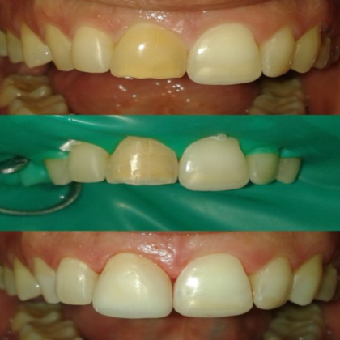
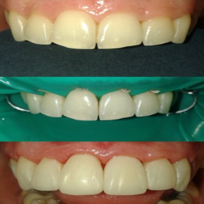
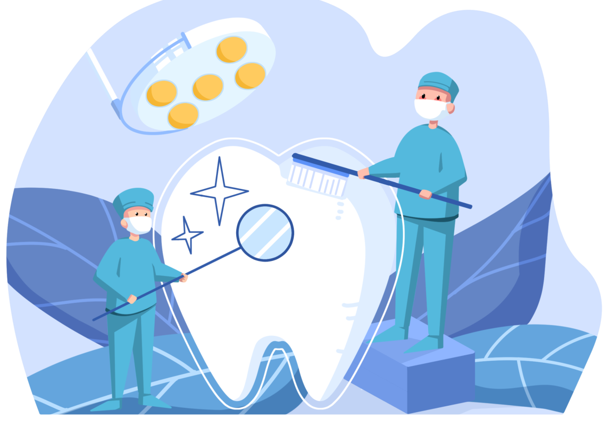
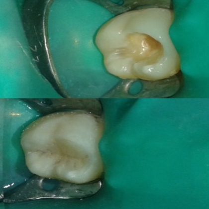
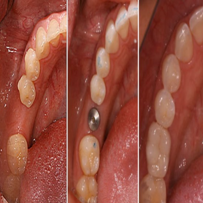
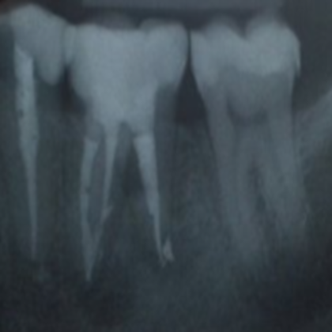
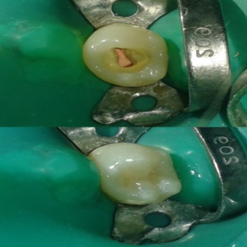
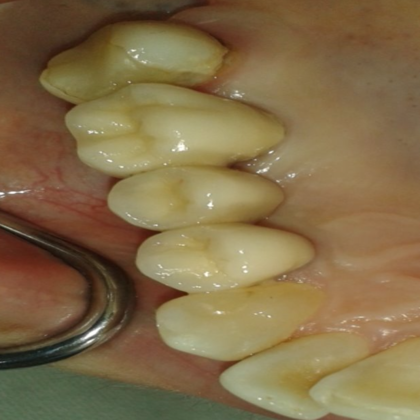
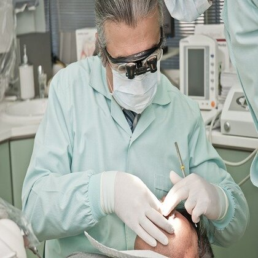
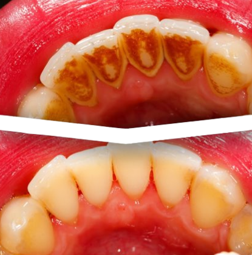

Услуги които предлагаме
Наша основна грижа е да се чувствате комфортно и удобно на стола
Eстетична стоматология

Избелване
- Избелването на зъби е напълно безвредна процедура.
- Най-често се провежда комбинирано в клиниката и в домашни условия с помощта на специално изработени шини.

Фасети
- директни / композитни/ и индиректни / керамични

Почистване на зъбен камък
- Почистване на зъбна плака.
- Почистване на зъбна плака и биофилм чрез ултразвък.
- Полираме зъбите с AIR-FLO W и специални пасти.
Цялостна Рехабилитация

Директна реставрация – най-съвременната методика
- Чрез директната реставрация зъбът се възстановява такъв какъвто е бил преди да се разруши – цвят, форма и функция.
- Всички реставрации изработваме със специална изолация – кофердам, която осигурява стерилно поле и повишена трайност на възстановяването.
- Работим с материали от най-висок клас.
Пломба
Директна реставрация

Самочувствие с дентални импланти
- Защо имплант?
- Предвидимо и дълготрайно възстановяване на липсващите зъби
- Не се изпиляват здрави зъби.
- Висока естетика.
- Дава възможност за фиксирана протетична конструкция .
- Предотвратява загубата на кост.
Лечение на кореновите канали

За лечението
- Новите технологии ни позволяват да Ви предложим сигрно и безболезнено лечение със стабилни и дълготрайни резултати.
- Качество, гарантирано с работа под микроскоп.
- Машинна обработка на каналите.
- Апекслокатор за точно измерване на дължината на кореновия канал.
- Стерилна работа с кофердам.
- Без промяна цвета на зъба.

Защо изолацията с кофердам е важна?
- Стерилност – не се внася допълнителна инфекция в канала.
- Комфорт за пациента – няма контакт със силните антибактериални разтвори, използвани за лечение на инфекциата в каналите.
- Няма опасност от попадане на инструменти в устата.
- Откриваме всички канали.
- Отстраняваме счупени инструменти.
- Контрол на запълването на канала.
Защо работата с микроскоп е важна?
Протетично лечение

За лечението
- Кога?
- Възстановяване на липсващи зъби.
- Възстановяване на силно разрушени зъби.
- Защо?
- Предотвратява разместването и прорастването на останалите зъби.
- Подобрява хигиената и намалява риска от кариеси и заболявания на венците.
- Подобрява усмивката, говора и дъвченето.
- Осигурява опора на устните за по-младежко лице.
- Конструкциите се изработват от висококачествена керамика в съвременна лаборатория с високи естетични резултати.
Хирургично лечение

За лечението
- Извършва се от нашия специалист – хирург в зависимост от индивидуалните нужди на пациента.
- Отстраняване на неподлежащи на лечение зъби.
- Отстраняване на мъдреци.
- Апикална остеотомия – отстраняване на киста от корена.
- Поставяне на импланти.
Лечение на пародонталните заболявания

За лечението
- Причиняват се от бактериална плака и зъбен камък.
- Бактериите в плаката и зъбния камък произвеждат токсини, които дразнят венците и водят до образуването на джобове,стопяване на костта, разклащане на зъбите.
- Ако не се лекуват, са основна причина за загуба на зъби.
- Ние ще изготвим индивидуален план за профилактика и лечение на заболяванията на Вашите венци.